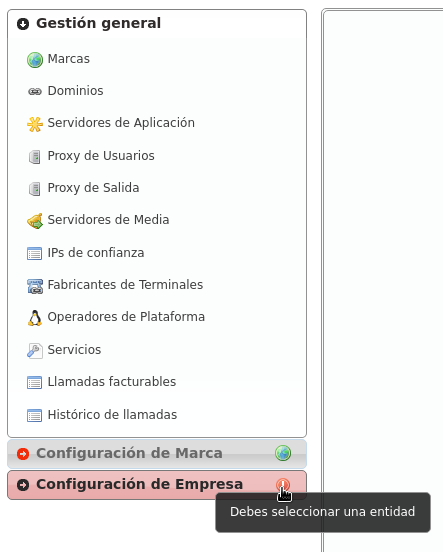
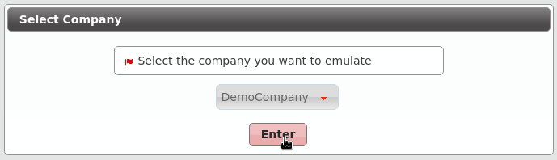

Configuración de Marca¶
Para conseguir que esta DemoBrand tenga una compañía con 2 usuarios que se puedan llamar entre sí, vamos a tener que hacer muy poco en este bloque.
De hecho, al acceder a la sección Empresas, vemos que ya existe una compañía DemoCompany que podremos utilizar para cumplir nuestro ansiado objetivo :)
Solo le falta una cosa a esta empresa, marcado con EDIT en la captura anterior.
Dominio SIP de la compañía¶
Tal y como se introdujo en la sección anterior, es imprescindible que cada empresa tenga un dominio público que resuelva a la IP configurada para el Proxy de Usuarios.
Nota
El registro DNS puede ser de tipo A (soportado por todos los hardphones/softphones) o del tipo NAPTR+SRV.
Una vez configurado el dominio (por medio de procedimientos que escapan al objetivo de este documento), bastará con escribir el parámetro en el campo adecuado de nuestra empresa:
Una vez guardada la empresa, este dominio aparecerá en la sección descrita en la sección anterior:
Atención
Es fundamental entender este bloque. Salvo que tengamos una única compañía registrada, sin un registro DNS correctamente configurado apuntando a la IP del Proxy de Usuarios, ¡fracasaremos en nuestro objetivo!
Esta es una buena señal para el dominio que acabamos de configurar, siempre y cuando en lugar de 10.10.3.10 aparezca la IP pública configurada en Proxy de Usuarios.

Peligro
¿Se ha insistido suficiente en que sin un registro DNS correctamente configurado apuntando a la IP del Proxy de Usuarios no funcionará nada?
No tengo tiempo para crear registros DNS¶
Todo lo contado hasta este punto es verídico: a medida que vayamos creando marcas y éstas vayan creando empresas, cada una de ellas necesitará un registro DNS.
Pero la primera empresa de la plataforma es especial y puede apoderarse de laIP del Proxy de Usuarios y usarla como si de un DNS se tratara:

A pesar de no ser un dominio, al estar usándose como tal, aparecerá en la sección de Dominios:
Truco
Es importante entender que este truco solo es válido para la primera empresa de la plataforma ;)
Parámetros restantes¶
Estos son los parámetros relevantes configurados en la sección Compañía:
- Nombre
Configura el nombre de la compañía.
- NIF
Número empleado en las facturas de la compañía.
- Datos de facturación
Información incluida en las facturas creadas por esta marca.
- Prefijo de salida.
Algunas compañías emplean un prefijo adicional para las llamadas salientes.
- DDI saliente
Introducido en 1.3, esta opción permite elegir el DDI saliente para las llamadas de esta compañía, si no son especificadas en un nivel inferior (por ejemplo a nivel de usuario)
- Servidores de Media
Como se ha mencionado, los servidores de media pueden ser agrupados para reservar capacidades o para una distribución geográfica. Esta sección le permite asignarlos a las compañías.
- Método de distribución
‘Basado en hash’ distribuye las llamadas en base a un parámetro único por empresa/cliente retail, ‘Round robin’ distribuye las llamadas uniformemente entre todos los AS-es y ‘estático’ se utiliza solo para testing.
- Servidores de aplicación
Si se utiliza ‘estático’, selecciona un AS aquí.
- Grabaciones
Configure el límite de tamaño de las grabaciones de esta compañía. Se enviará una notificación a la dirección configurada cuando se alcance el 80% y se rotarán las grabaciones más antiguas cuando se alcance el límite.
- Features
Introducido en 1.3, permite a los operadores de marca elegir las features de la compañía. Esto habilitará o deshabilitará las diferentes secciones del menú de compañía.
La mayoría de las features son auto-explicativas, pero las notificaciones de voz merecen una explicación: si se habilitan, cuando una llamada falla, el usuario escuchará una locución explicando lo ocurrido (“no tiene permisos para realizar esta llamada”, “la llamada no puede ser tarificada”, etc.)
Advertencia
La rotación de grabaciones ocurre en dos niveles: marca y compañía. Esto significa que las grabaciones de una compañía puede llegar a ser rotadas incluso si esta no ha alcanzado su límite (o incluso si no tiene límite) si se ha alcanzado el límite de espacio de su marca.
Error
De nuevo: La rotación de grabaciones ocurre en dos niveles: marca y compañía. Esto significa que las grabaciones de una compañía puede llegar a ser rotadas incluso si esta no ha alcanzado su límite (o incluso si no tiene límite) si se ha alcanzado el límite de espacio de su marca.
Consejo
Para evitar esto, asegurese que la suma de los límites de las companías no exceda el tamaño asignado a la marca y que todas las compañías tienen un límite de espacio configurado (si es 0, tendrán ilimitado).
Tanto Método de distibución como Servidor de aplicación solo son visibles para el operador global (god).
Advertencia
El método de distribución ‘Round-robin’ está reservado para compañías enormes cuyas llamadas no entren en un AS. Utilizar ‘Basado en hash’ para el resto.
Emular la empresa Demo¶
El proceso de emulación de empresa es idéntico al de emulación de marca, conla diferencia de que filtra el bloque ‘Configuración de Empresa’ en lugar delbloque ‘Configuración de Marca’.
 Una vez emulada la empresa, la parte superior derecha de la pantalla mostraráque vamos por el buen camino :)